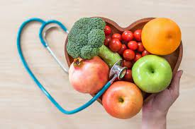

VIDA SALUDABLE
Si tu vida quieres cuidar, por una buena alimentación debes empezar!.
¿A que llamamos dieta saludable?
 Es aquella que cubre nuestras necesidades vitales sin el uso de alimentos que pueden resultarnos nocivos a nuestro organismo.
Una dieta saludable debe tener las siguientes características:
Incluir cinco raciones diarias entre frutas y verduras.
El consumo diario de cereales y féculas.
Dos veces por semana es recomendable comer pescado azul.
Usar de forma restringida la carne roja (ternera), siendo preferible el consumo de pollo, conejo o pavo. En general, tomamos más carne de la recomendada.
Reducir las proteínas animales en favor de los cereales y féculas. Los cereales, son ricos en hierro, calcio, ácido fólico y vitaminas. Está comprobado científicamente, según la Asociación Americana de Cáncer, que basar una dieta en una gran variedad de alimentos vegetales, disminuye el riesgo de enfermedades crónicas graves. Las féculas y harinas deben ser integrales,
al refinarlas se les quita la cáscara que es precisamente el lugar que contiene las vitaminas y los nutrientes.
Utilizar el aceite de oliva en cantidad limitada (el equivalente a una cucharada de sopa al día), los propios alimentos ya llevan grasa.
Evitar cocinar los alimentos con aceite (fritos o rebozados), siendo preferible la cocción al vapor, horno o plancha.
Evitar la comida precocinada.